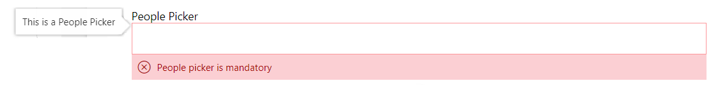
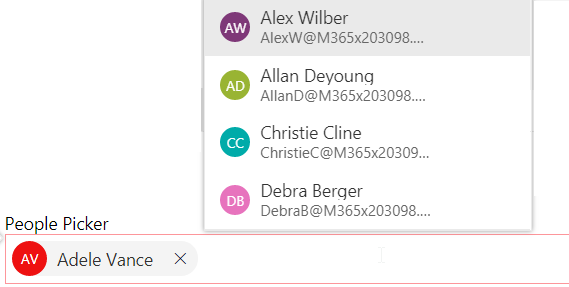
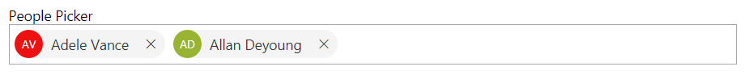

People Picker¶
This control renders a People picker field which can be used to select one or more users from a SharePoint group or site. The control can be configured as mandatory. It will show a custom error message if field is empty.
Note
You can also check out People Picker component in the Microsoft Graph Toolkit.
- Empty People Picker control with error message and tooltip:

- Selecting People:

- Selected people:

How to use this control in your solutions¶
- Check that you installed the
@pnp/spfx-controls-reactdependency. Check out the getting started page for more information about installing the dependency. - Import the following modules to your component:
import { IPeoplePickerContext, PeoplePicker, PrincipalType } from "@pnp/spfx-controls-react/lib/PeoplePicker";
- Use the
PeoplePickercontrol in your code as follows:
const peoplePickerContext: IPeoplePickerContext = {
absoluteUrl: this.props.context.pageContext.web.absoluteUrl,
msGraphClientFactory: this.props.context.msGraphClientFactory,
spHttpClient: this.props.context.spHttpClient
};
<PeoplePicker
context={peoplePickerContext}
titleText="People Picker"
personSelectionLimit={3}
groupName={"Team Site Owners"} // Leave this blank in case you want to filter from all users
showtooltip={true}
required={true}
disabled={true}
searchTextLimit={5}
onChange={this._getPeoplePickerItems}
showHiddenInUI={false}
principalTypes={[PrincipalType.User]}
resolveDelay={1000} />
- With the
onChangeproperty you can get the selected People in thePeoplePicker:
private _getPeoplePickerItems(items: any[]) {
console.log('Items:', items);
}
Use Substrate search¶
Sometimes, depending on how your organization is configured regarding users and groups, performing search can be tricky. As the PeoplePicker is using the SP.UI.ApplicationPages.ClientPeoplePickerWebServiceInterface.clientPeoplePickerSearchUser endpoint under the hood, there is an optional parameter called useSubstrateSearch. Setting this to true will perform a search using the Microsoft 365 Substrate, which will go through centralized stored data in order to find requested info. More details about this feature can be found here and here.
Implementation¶
The People picker control can be configured with the following properties:
| Property | Type | Required | Description | Default |
|---|---|---|---|---|
| context | IPeoplePickerContext | yes | Context of the component, based on the SPFx context (BaseComponentContext). | |
| titleText | string | no | Text to be displayed on the control | |
| groupName | string | no | Group from which users are fetched. Leave it blank if need to filter all users. When both groupName and groupId specified groupName takes precedence. | none |
| groupId | number | string | (string|number)[] | no | Group from which users are fetched. Leave it blank if need to filter all users. When both groupId and groupName specified groupName takes precedence. If string is specified, Microsoft 365 Group is used. If array is used, fetch results from multiple groups | none |
| personSelectionLimit | number | no | Defines the limit of people that can be selected in the control | 1 |
| required | boolean | no | Set if the control is required or not | false |
| disabled | boolean | no | Set if the control is disabled or not | false |
| errorMessage | string | no | Static error message displayed below the picker. Use onGetErrorMessage to dynamically change the error message displayed (if any) based on the current value. errorMessage and onGetErrorMessage are mutually exclusive (errorMessage takes precedence). |
|
| onGetErrorMessage | (items: IPersonaProps[]) => string | Promise<string> | no | The method is used to get the validation error message and determine whether the picker value is valid or not. Mutually exclusive with the static string errorMessage (it will take precedence over this).When it returns string:
When it returns Promise<string>:
|
|
| errorMessageClassName | string | no | applies custom styling to the error message section | |
| showtooltip | boolean | no | Defines if need a tooltip or not | false |
| tooltipMessage | string | no | Specify the tooltip message to display | |
| tooltipDirectional | DirectionalHint | no | Direction where the tooltip would be shown | |
| onChange | (items: IPersonaProps[]) => void | no | Get the selected users in the control. | |
| peoplePickerWPclassName | string | no | applies custom styling to the people picker element | |
| peoplePickerCntrlclassName | string | no | applies custom styling to the people picker control only | |
| defaultSelectedUsers | string[] | no | Default selected user emails or login names, optionally append /title with forward slash. If user is not found then only optional title will be shown. If you do not have email or login name of inactive users just pass /title alone prefixed with slash. |
|
| webAbsoluteUrl | string | no | Specify the site URL on which you want to perform the user query call. If not provided, the people picker will perform a tenant wide people/group search. When provided it will search users/groups on the provided site. | |
| principalTypes | PrincipalType[] | no | Define which type of data you want to retrieve: User, SharePoint groups, Security groups. Multiple are possible. | |
| ensureUser | boolean | no | When ensure user property is true, it will return the local user ID on the current site when doing a tenant wide search. | false |
| allowUnvalidated | boolean | no | When true, allow email addresses that have not been validated to be entered, effectively allowing any user. | false |
| suggestionsLimit | number | no | Maximum number of suggestions to show in the full suggestion list. | 5 |
| resolveDelay | number | no | Add delay to resolve and search users | 200 |
| placeholder | string | no | Short text hint to display in empty picker | |
| styles | Partial<IBasePickerStyles> | no | Styles to apply on control | |
| searchTextLimit | number | no | Specifies the minimum character count needed to begin retrieving search results. | 2 |
| useSubstrateSearch | boolean | no | When true, performs a wider search using Microsoft 365 Substrate. |
false |
Enum PrincipalType
The PrincipalType enum can be used to specify the types of information you want to query: User, Security groups, and/or SharePoint groups.
| Name | Value |
|---|---|
| User | 1 |
| DistributionList | 2 |
| SecurityGroup | 4 |
| SharePointGroup | 8 |
Interface IPeoplePickerContext
Provides mandatory properties to search users on the tenant
| Value | Type | Description |
|---|---|---|
| absoluteUrl | string | Current SPWeb absolute URL. |
| msGraphClientFactory | MSGraphClientFactory | Instance of MSGraphClientFactory used for querying Microsoft Graph REST API. |
| spHttpClient | SPHttpClient | Instance of SPHttpClient used for querying SharePoint REST API. |
MSGraph Permissions required¶
This control requires at least one the following scopes if groupId is of type string:
GroupMember.Read.All+User.ReadBasic.AllDirectory.Read.All